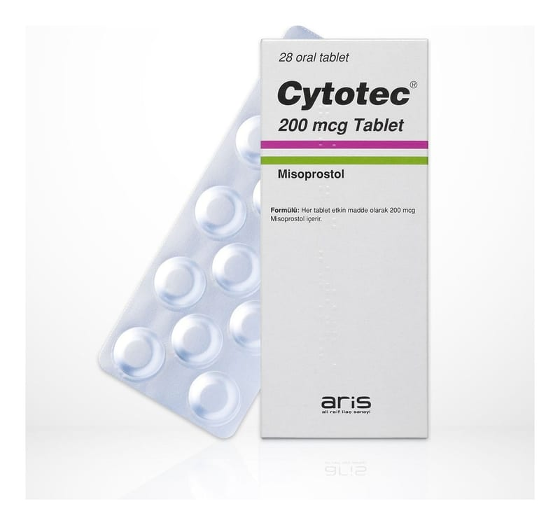

Cytotec 200 mcg Tablet, 28 Adet

Ne için kullanılır
KT · Bölüm 1CYTOTEC®28 adet tablet içeren blister ambalajda takdim edilmektedir. Tabletler beyaz ile beyazımsı renkte altıgen (hekzagonal) .ekildedir.
• CYTOTEC®vücudumuzun doğal olarak ürettiği “prostaglandin” adı verilen maddeye benzer olan misoprostol içerir. Prostaglandinler midede ve barsakta üretilir, mukozanın korunmasına yardımcı olur. CYTOTEC®“anti2ülser ajanları” olarak bilinen ilaç grubu içinde yer alır. • CYTOTEC®midenizde ya da midenizin bo.aldığı yer olan duodenumda ülser olu.umunu önlemeye yardımcı olabilir. Bu ülserler diklofenak ve naproksen gibi steroid olmayan antienflamatuar ilaçların (NSAĐĐ) kullanımının sonucunda olu.abilir. NSAĐĐ’ler midenizdeki ve barsağınızdaki prostaglandin miktarını azaltarak çalı.ırlar. Bu durum sindirim güçlüğüne ve ülserlerin olu.umuna sebep olur. CYTOTEC®2/6
prostaglandinlerle yer deği.tirir ve midenizi ve barsağınızı korumaya yardımcı olur. Bu sayede NSAĐĐ kullanmaya devam edebilirsiniz. CYTOTEC®ayrıca mide salgınızdaki asiti azaltır ve bikarbonatı arttırır. • CYTOTEC®var olan ülserlerin iyile.mesinde de kullanılabilir.
2.CYTOTEC®’i kullanmadan önce dikkat edilmesi gerekenler
CYTOTEC®herkes için uygun olmayabilir.
CYTOTEC®’i a&ağıdaki durumlarda KULLANMAYINIZ Eğer; • Gebeyseniz veya gebe kalmayı planlıyorsanız CYTOTEC®’i kullanmayınız. Çünkü dü.üğe sebep olabilir. • Emziriyorsanız, • CYTOTEC®’e ya da ilacın bile.imindeki yardımcı maddelerden herhangi birisine ya da diğer prostaglandin ilaçlarına alerjiniz varsa ya da geçmi.te olduysa
Böyle bir durumda ilacı kullanmayınız.
CYTOTEC®’i a&ağıdaki durumlarda DĐKKATLĐ KULLANINIZ Eğer; • kalp krizi, • dü.ük ya da yüksek kan basıncı veya kan damar hastalıklarından herhangi biri mevcutsa • henüz menopoza girmemi. bir bayansanız, doktorunuz sadece NSAĐĐ’lerin tetiklediği ülserin geli.me riskinin yüksek olduğuna kanaat getirdiğinde bu ilacı reçetelendirecektir. • Đshale eğilimli bir hastaysanız, ishal riskini azaltmak için ilacınızı gıda ile birlikte almalı ve magnezyum içeren asit giderici ilaçlardan (antiasitlerden) uzak durulmalısınız.
NSAĐĐ’lerle tedavi edilirken misoprostol kullanan hastalarda mide2bağırsak bölgesinde kanama, ülser ve delinme olu.abilir. Doktorlar ve hastalar bu belirtilerin olmadığı durumda bile ülser için alarmda olmalıdırlar ve mide2bağırsak bölgesinin üst kısımlarında kötü huylu tümor gibi hastalıklarının olmamasını sağlamak amacıyla tedavi öncesinde bu bölgenin ve karın bo.luğunun incelenmesi (endoskopi ve biyopsi) yapılmalıdır. Bu ve diğer gerekli görülen ara.tırmalar, doktor tarafından belirli aralıklarla tekrarlanmalıdır.
Sıvı kaybı (dehidrasyon) görülen hastalarda kullanımı tehlikelidir. Eğer sizde böyle bir durum varsa, doktorunuz sizi dikkatli bir .ekilde gözlemleyecektir.
Bu uyarılar geçmi.teki herhangi bir dönemde dahi olsa sizin için geçerliyse lütfen doktorunuza danı.ınız.
CYTOTEC®’in yiyecek ve içecek ile kullanılması
CYTOTEC®’i besinlerle birlikte alınız.
Hamilelik Đlacı kullanmadan önce doktorunuza veya eczacınıza danı ınız.
CYTOTEC®dü.üğe sebep olabilir bu sebeple bu ilacı kullanırken güvenilir doğum kontrol yöntemlerini uygulamak çok önemlidir. Doktorunuz hamile kalmanız durumunda olu.acak risklere kar.ı bilinçli olmanızı sağlayacaktır. Eğer gebe kalmayı planlıyorsanız, bu durumu doktorunuza anlatınız çünkü doktorunuz CYTOTEC®yerine farklı bir tedavi uygulayabilir.
Hamileyseniz veya hamile kalmayı planlıyorsanız bu ilacı kullanmamalısınız.
Tedaviniz sırasında hamile olduğunuzu fark ederseniz hemen doktorunuza veya eczacınıza danı ınız.
Emzirme Đlacı kullanmadan önce doktorunuza veya eczacınıza danı ınız. Eğer ezmiyorsanız CYTOTEC®kullanmayınız.
Araç ve makine kullanımı CYTOTEC®kullanımından sonra sersemlik bildirilmi.tir. Đlacın sizi nasıl etkilediğini öğrenene kadar araç ve makineyi dikkatli kullanınız.
CYTOTEC®’in içeriğinde bulunan bazı yardımcı maddeler hakkında önemli bilgiler CYTOTEC®’in içeriğinde mide bulantısı ve diyareye sebep olabilen hidrojene kastor yağı bulunmaktadır. CYTOTEC®her birim dozunda 3.0 mg sodyum starch glikolat içermektedir. Bu miktar kontrollü sodyum diyetinde olan hastalar için göz önünde bulundurulması gereken 23 mg sodyumun altındadır.
Diğer ilaçlar ile birlikte kullanımı CYTOTEC®’i çoğu ilaçla sorunsuz olarak kullanabilirsiniz. Eğer antiasit (midenizdeki asiti azaltmaya çalı.an ilaç) kullanıyorsanız, magnezyum içerikli antiasitleri kullanmayınız. Çünkü bu ilaçlar ishali .iddetlendirebilir.
NSAĐĐ’lerle CYTOTEC®’in birlikte alınması seyrek olarak kol ve bacaklarda ödeme sebep olabilir.
Eğer reçeteli ya da reçetesiz herhangi bir ilacı u anda kullanıyorsanız veya son zamanlarda kullandınız ise lütfen doktorunuza veya eczacınıza bunlar hakkında bilgi veriniz.